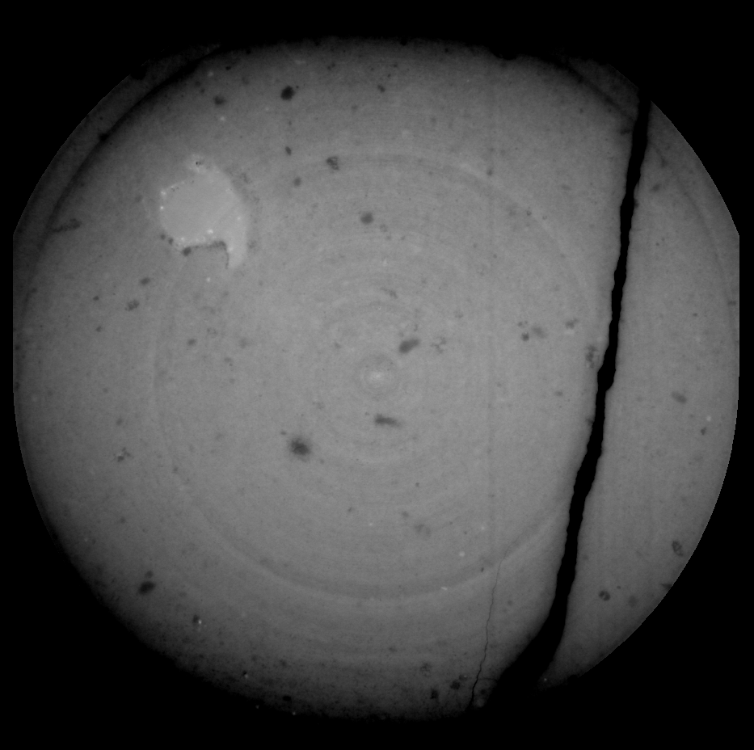
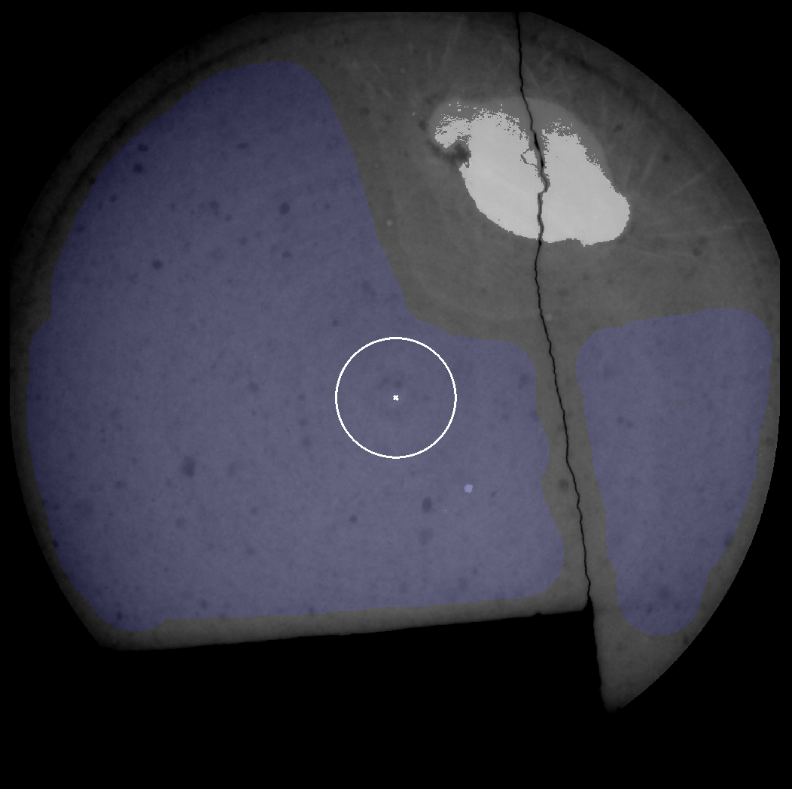
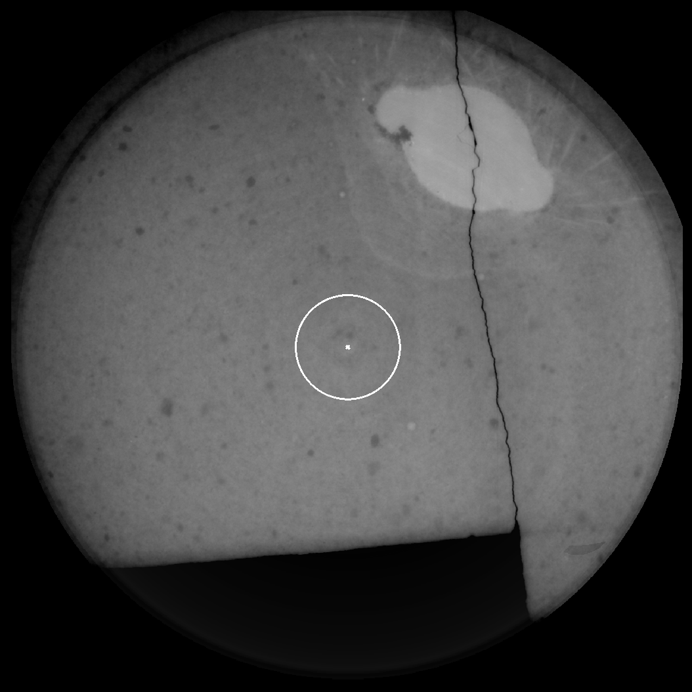

Radial generation is a generation mode that applies a correction filter
to data. Unlike linear, range and polynomial modes (but like LCE mode)
it does not replace existing working data, but applies a correction to it. Radial artefact correction
is designed to correct certain computed tomography artefacts (beam hardening, ring artefacts) that result in
brightness variations relative to the centre of rotation. It is designed for use on greyscale rather than colour raw images.
Figure RAC1 shows an an example of one such dataset.

Figure RAC1. A slice from a CT dataset with radial artefacts. The dataset darkens away from the centre (beam hardening), and
has concentric circular bands of lighter and darker pixels (ring artefacts).¶
Using radial artefact correction involves several steps. First, the user must determine the central point for the artefacts.
The centre is placed manually by altering it’s x and y coordinates with the appropriate spin-box in the generation panel. Use the
‘Show details’ tick-box to overlay a marker on the image to show this position. As an aid, a ‘Set to Image Centre’ button is provided
which places this center in the middle of the image. For most datasets, this will be at or very close to the true centre. Note that coordinates
are for the raw image not the working image (if there is downsampling, these will not be the same).
Secondly, the user must specify a set of sample pixels for the correction algorithm. These should be represent the ‘normal’ regions
of the sample, away from the specimen or any other artefacts or atypical regions (cracks, missing pieces etc). These are specified using
the ‘lock’ brush mode. The more pixels are included in this sample, the more noise will be averaged out, and it is both possible and
recommended to extend the sample over multiple slices. The SPIERS radial correction algorithm does not extrapolate beyond
available data, so the correction will only be applied as far away from the center as the sample reaches - it is thus important that it
should reach as close to the edge as specimen positioning demands. Samples should not however extend into completely black regions
lacking data. A ‘Min radius’ should also be set. Pixels inside the minimum radius from the centre will not be corrected. This inner region is
also used to gauge the correct ‘target’ greyscale level for the correction.
Figure RAC2 shows an example of good sample selection for a single slice.

Figure RAC2. A slice from a CT dataset with a sample defined using the lock brush (blue). Note that the
sample includes the centre, extends to near the edge (as the specimen is also near the edge), and avoids both the crack on
the right hand side, and the missing portion towards the bottom. The white circle near the centre shows the specified minimum radius.¶
Once the sample has been defined, select all slices from which lock data is to be used, and click the ‘Measure Sample’ button. SPIERS
collates the specified sample data and determines a mean brightness level for the correction based on distance to the specific
centre point, and relative to the mean brightness of the pixels within the specified minimum radius circle. Note that sampling is
performed from raw data not working data.
To apply the correction, click the ‘Generate’ button while the generation window is in ‘Radial’ mode. The ‘Adjust’ slider allows
an additional absolute brightness to be added or subtracted from all pixels after the radial correction is made, to achieve the
desired threshold level. A typical workflow would be to generate a linear working image for a single slice, then apply the radial correction,
to that single slice, with the optimum adjustment level determined by trial and error. Note that to re-generate in this workflow, both
the linear and radial generation steps must be repeated, as performing a second radial correction without an intervening linear generation will simply
double the effect of the radial correction, rather than repeating it. After the correct settings are determined, the linear generation and
correction can be applied to all required slices by selecting them in the slice selection prior to generation and correction.
Note that sample pixels will not be affected by generation and correction as they are locked (the lock brush doubles up as both a
a selection and locking facility). This is unlikely to be a problem as, by definition, these pixels are
outside the specimen and region of interest and likely to be excluded from your final model by masks. If however this is
a problem in your dataset, you can remove the locks with the brush prior to the application of your corrections - once the
sample has been measured, the lock brushing is no longer required. This unlocking has been carried out prior to generation in
figure RAC3 below, to demonstrate the effect of correction on a single slice.

Figure RAC3. The results of applying the correction specified in figure RAC2 to the slice, visualised as a non-thresholded working image.
Note that the correction has evened out the greyscale level, removing the beam hardening artefact, but that the correction only extends as far
out from the centre as the original specified sample region.¶